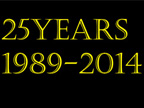
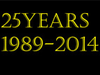
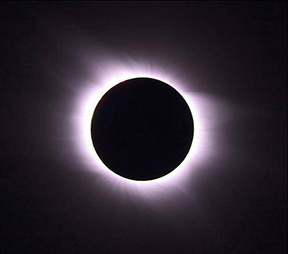
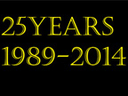
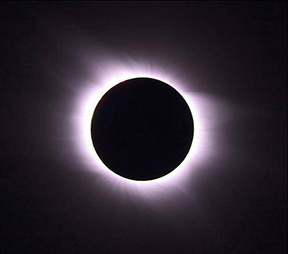
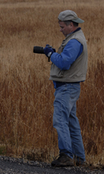

Eastern Idaho Photographic Society
 


This is in Idaho Falls in August 21, 2017.

© Roger Heng Oxbow Grand Teton National Park

©Roger Heng 2014


© Roger Heng Oxbow Grand Teton National Park
©Roger Heng 2014
National Parks| Monument and Reserve| Bureau of Land Management| National Forests| Near By Ghost Towns| Near By Wildlife Refuges| Weather| Sunrise/Sunset Times| Photographers/Photo Clubs

Photographs Copyright© Photographer, Owner, or Eastern Idaho Photographic Society. Photographs
may not be reproduced in any manner without written permission.
Web Page Copyright© 2016 Eastern Idaho Photographic Society

© Michael Fryer
Eastern Idaho Photographic Society's October 2003 Juried Show

© Lisa Stephens
Photograph of member on a field trip

©Roger Heng

Chesterfield, Idaho © Roger Heng

HDR photograph ©Michael Fryer

Eastern Idaho Photographic Society's October 2011 Juried Show

© Michael Fryer

© Nelson Sibulo 2012
Member on Field Trip
Waterfall Along Columbia River.
© John Beach

Image Shown in Advancement © Shannon B. 2011

Photographing wildlife by a member

Best of Show 2010 EIPS October Show

© Roger Boe
Best of Show October 2009 © Michael Fryer,

Advancement image by ©Steve Spring

Paint with light workshop© Steve Spring 2011

Best of Show October 2003 © Doug Jenson

Yaquina Lighthouse© Sue Heng 2008

Mammoth falls, Columbia River Gorge, Oregon Best of Show 2006, © RodneyJack

Photograph of Roger Boe © 2011

Photograph a bridge in Island Park by© Roger Heng

Best of Show October 2010 © Roger Boe

Nelson's image of Ruin Of Cagsaua- Philippines© 2011